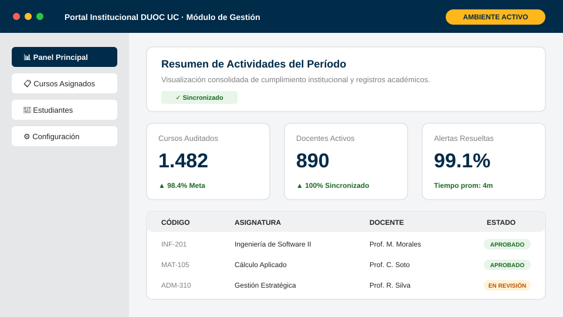

Título de la Presentación
Subtítulo o bajada institucional del proyecto o iniciativa
Área, Escuela o Dirección Responsable
#
Verdaderamente
Conectad@s
Agenda
1
Contexto y Diagnóstico
2
Arquitectura Técnica y Solución
3
Motor de Auditoría y Reglas
4
Automatizaciones y Operación
5
Resultados e Indicadores Clave
6
Gobernanza y Cierre
Sección 01
Nombre de la Sección
Descripción breve o aspectos fundamentales a tratar en este módulo.
Sección 02
Enfoque y Propuesta
Estrategia modular y capacidades técnicas desplegadas.
Categoría Temática
Diapositiva Dividida con Fotografía
Primer Bloque de Contenido
- Punto Relevante 1: Explicación concisa y clara del proceso.
- Punto Relevante 2: Métrica o evidencia cuantitativa asociada.
- Punto Relevante 3: Validación operativa en terreno.
Segundo Bloque de Contenido
- Detalle Operacional: Flujo simplificado y sin duplicidades.
- Resultado Clave: Incremento en niveles de servicio y satisfacción.
Pilares Estratégicos
Diseño en Tres Columnas con Tira Negra
1. Calidad Formativa
Excelencia en los resultados de aprendizaje.
- Estándares Claros: Rúbricas e instrumentos unificados.
- Acompañamiento: Asesoría técnica docente continua.
- Evaluación: Monitoreo periódico del logro formativo.
2. Experiencia Digital
Centralidad y accesibilidad para el estudiante.
- Canales Únicos: Atención rápida y sin duplicidades.
- Alertas Tempranas: Detección preventiva de rezago.
- Autoservicio: Plataforma institucional activa 24/7.
3. Eficiencia Global
Sostenibilidad de flujos y procesos clave.
- Automatización: Eliminación de rutinas manuales.
- Datos Fiables: Información en tiempo real para gestión.
- Escalabilidad: Capacidad para alta concurrencia.
Componentes y Servicios
Grilla de 4 Características con Iconos
Estandarización
Reglas transversales que aseguran homogeneidad y coherencia institucional.
Auditoría en Tiempo Real
Registro transparente y trazabilidad inmediata de cada hito académico.
Comunidades de Práctica
Espacios de colaboración e intercambio metodológico entre docentes.
Decisiones con Datos
Indicadores consolidados para optimizar la toma de decisiones estratégicas.
Evolución Operacional
Comparación: Situación Inicial vs. Nuevo Modelo
Situación Inicial
Operación Tradicional
- Revisiones Manuales: Muestreos aleatorios que cubrían menos del 15% de cursos.
- Tiempos Extensos: Días de espera para consolidar reportes de cumplimiento.
- Criterios Dispares: Cada facultad aplicaba estándares disímiles.
Nuevo Modelo
Gestión Automatizada
- Cobertura Total: Auditoría continua sobre el 100% de las aulas virtuales.
- Detección Inmediata: Alertas automatizadas en menos de 4 minutos.
- Estándares Únicos: Criterios institucionales consensuados y trazables.
Indicadores Clave
Panel de Métricas y Cumplimiento
98.4%
Cumplimiento Global
+24 pp
4 min
Tiempo de Revisión
↓ 88%
30 min
Generación Reportes
↓ 95%
6 hrs
1ª Respuesta Mesa
↓ 67%
Cobertura Institucional
- Total de carreras y docentes integrados al monitoreo continuo.
- Indicadores consolidados por vicerrectoría y escuela.
Eficiencia Operativa
- Disminución sustancial en tiempos muertos y reclamos.
- Mayor disponibilidad y estabilidad de los servicios digitales.
Evidencia Operativa
Auditoría en Vivo sobre Plataforma Institucional

Hallazgos del Motor Automático
- Autocalificación Verificada: Detección exitosa de parámetros de puntaje y ponderaciones correctas.
- Estructura de Cursos: Cumplimiento de estándares instruccionales y diseño pedagógico.
- Trazabilidad de Respuestas: Retroalimentación inmediata configurada para el estudiante.
- Disponibilidad de Fechas: Coincidencia validada con el calendario académico oficial.
Verificación Cruzada
Auditoría Comparada de Interfaces y Procesos
Plan de Trabajo
Orden, Diseño y Estructura para el Crecimiento
Desafíos Académicos
- Revisión Integral: Pertinencia, consistencia curricular y empleabilidad del plan.
- Articulación Directa: Conexión formativa hacia carreras profesionales.
- Oferta Conjunta: Nuevo modelo de co-construcción de oferta con VRA.
Capacidades Digitales DUOC UC
- Articulación del Modelo pedagógico digital en comités de oferta y currículo.
- Estándares de Calidad Consensuados para el aprendizaje en todas las facultades.
- Nuevas Áreas de Conocimiento y trayectorias formativas continuas y flexibles.
- Transferencia y Eficiencias sostenibles para docencia y gestión académica.
Sistemas e Integración
- Arquitectura Centrada en Estudiante: Procesos ágiles y eficientes.
- Integración de Datos: Información unificada para decisiones oportunas.
- Escalamiento Concurrente: Soporte estable para alta demanda anual.
Modelo de Acompañamiento
- Robustecimiento de Tutores y perfiles formativos especializados.
- Herramientas de Gestión: Canales unificados de seguimiento.
- Acompañamiento Socioafectivo: Foco en la retención estudiantil.
Plan de Crecimiento
- Expansión de Oferta: Nuevos programas formativos activos.
- Sostenibilidad Operacional: Modelo de costos e inversión balanceado.
- Consolidación del Modelo: Posicionamiento de calidad institucional.
Resultado esperado:
Gran salto de crecimiento, calidad y posición de los servicios educativos institucionales.
Infraestructura y Tecnología
SVG Vectorial Integrado como Imagen Lateral
Servicios Cloud Gestionados
- Orquestación Elástica: Clúster de contenedores autoescalable según demanda.
- Almacenamiento Concurrente: Base de datos relacional con réplicas de lectura.
- Distribución Global: Aceleración de contenidos con cifrado TLS y CDN.
SLA y Continuidad Operacional
- 99,5% de Disponibilidad Garantizada en períodos de máxima concurrencia.
- Copias de Seguridad Automatizadas con RPO menor a 15 minutos.
Inspección de Plataforma
Captura o Evidencia a Pantalla Completa
Arquitectura y Esquemas Técnicos
Diagrama Vectorial SVG a Pantalla Completa

#
Verdaderamente
Conectad@s